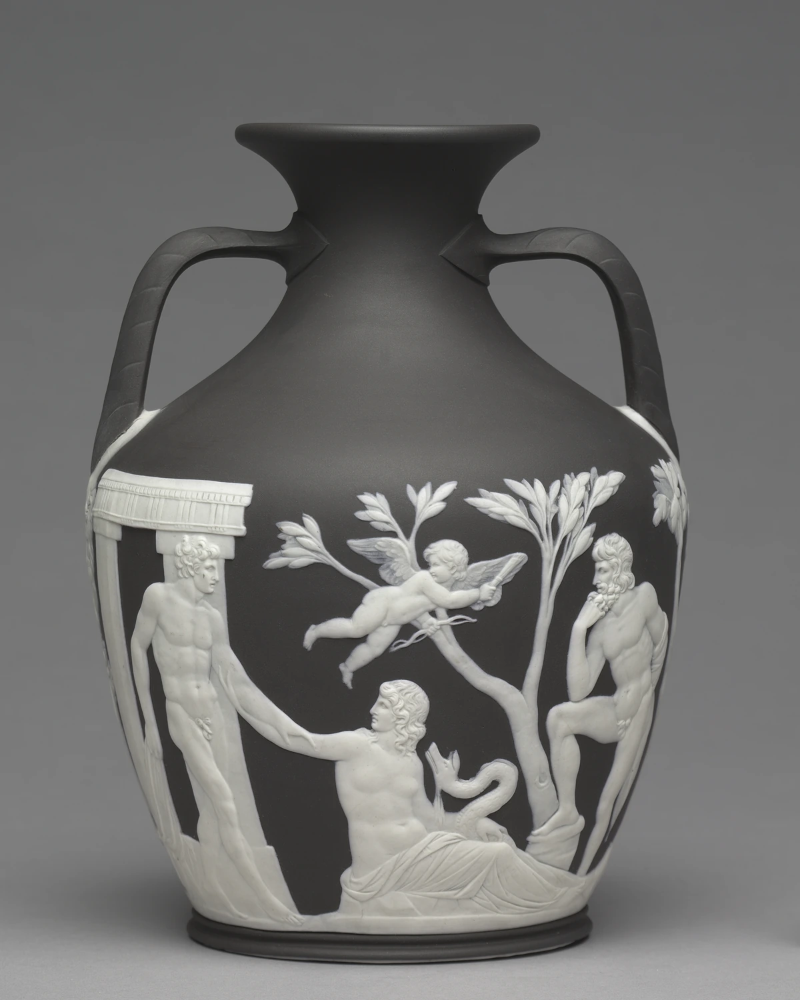

暗い地に、白い浮彫を重ねる。
暗色の器の表面に、白い人物や樹木の浮彫が浮かびます。平らな印刷ではなく、貼付装飾を施した陶器として陰影を読みます。
本文試作・実作品画像1点収録 / 代表画像セットは整備中 · 2026-11-01
古代の研究と再解釈を基礎とする美術・デザイン様式
Neoclassicism
LOOK AT THE WORK / 実作品を見る

画像を表示できませんでした。下の所蔵元リンクから作品を確認できます。
NEOCLASSICISM / CERAMICS · c. 1790
Josiah Wedgwood and Sons / The Cleveland Museum of Art
CMA1918.823、1790年頃。Josiah Wedgwood and Sons製、貼付装飾を施したジャスパーウェア。古代ローマのガラス原作ではなく、初期の陶製版のひとつです。
暗色の器の表面に、白い人物や樹木の浮彫が浮かびます。平らな印刷ではなく、貼付装飾を施した陶器として陰影を読みます。
二つの把手、張り出す胴、狭まる首が器を構成し、その表面に人物の姿勢と流れる衣が重なります。掲載写真は一方向で、裏面全体を示しません。
この個体は1790年頃のウェッジウッド製陶器です。古代ローマのガラス器を陶芸へ移す実践として見ることで、復興を単なる古い物の保存と区別できます。
形・陰影は取得画像の観察。新古典主義への配置は、館の古代器再制作の説明と様式史の一次資料を結び付けた編集判断です。図像の物語を推測して断定しません。
Josiah Wedgwood and Sons, Portland Vase, c. 1790. The Cleveland Museum of Art, Gift of Mrs. L. E. Holden, 1918.823. CC0.
所蔵元の個別作品記録 ↗原作品：CMAの個別Public Domain判断。公開デジタル画像：個別CC0指定とOpen Access方針。確認日 2026-11-01。
公式配信の原JPEGは無加工で保持し、拡大リンクから取得できます。ページ表示には縦横比と全画面を保った縮小WebPを使用（切り抜き・色補正なし）。原JPEGと各表示画像のサイズ・SHA-256を権利台帳に別記録。撮影者名は未確認のため推定しません。
美術館のOpen Access方針 / CC0 / 収録画像の権利台帳
所蔵館の個別公開指定とCC0方針に基づきます。全法域の権利保証や美術館の推奨を意味しません。
古代の作品を調べ、当時とは違う暮らしの中へ生かす。新古典主義は、古代ギリシャ・ローマの作品や遺跡を研究し、形のつり合い、輪郭、テーマを取り入れ直した様式です。18世紀後半以降の美術や生活の中に広がりました。
1750年代のイギリスとフランスで勢いを増しました。広がりを支えたのは、ポンペイやヘルクラネウムの発掘、グランド・ツアー（古代の遺跡などを巡って学ぶ旅行）、遺跡の寸法を測る調査や出版でした。古代の作品を直接見たり、写し描いたりすることで、絵画・彫刻・建築・装飾美術が共通して手本にするものが生まれました。
以下は観察のための問いです。すべての作品に共通する固定ルールや、未取得画像の実見結果ではありません。
白一色の表現とは限りません。油絵、石膏（せっこう）、陶器、版画では、色や材料が違います。アダムの細やかな室内装飾も含めて見ましょう。
文字の端に小さな飾りがある古典的な「セリフ体」が、すべて新古典主義というわけではありません。今回確認した印刷の表現では、フラックスマンに基づく版画の輪郭線と余白に注目します。
形の調和、単純さ、比例（ひれい：部分どうしの大きさのつり合い）を重視します。古代の人物像、器、衣服、装飾を、改めて解釈して使っています。
ダヴィッドの、奥行きを浅くして人物を横に並べるフリーズ状の構図を見ます。フリーズとは、建築などに見られる帯状の装飾です。フラックスマンでは、横顔、輪郭、広い余白が手がかりになります。すべてが左右対称とは限りません。
作品の知名度や画像の入手しやすさだけで選びません。以下は理想代表候補と、その検証状況です。画像の利用許諾を確認できていないものは掲載していません。
4作品は、比べるために選んだものです。すべての地域や分野をカバーしてはいません。3–5点の画像セットが完成したという意味でもありません。
陶芸・貼付装飾を施したジャスパーウェア
古代の器を、近代の焼き物で作り直した例です。古典の表現を再び取り入れる動きが、具体的にわかります。
古代ローマのガラス製の原作ではなく、初期の陶製版です。描かれた図像がどんな物語を表すかは、ここでは断定しません。新古典主義に含めるのは、館による古典復興の説明をもとにした編集上の判断です。
個別の根拠資料 ↗絵画・油彩、カンヴァス
古代の人物が何を正しいと考えて選んだかを、横長の帯のように場面を並べる構成と結びつけています。
革命前の作品です。古代の出来事を、見たとおりに記録したものとは考えません。
個別の根拠資料 ↗彫刻・実物大石膏模型
古代神話を読み直すことと、石膏（せっこう）の模型から大理石へ作る工程を示します。
エルミタージュの第2版のための模型です。ルーヴルにある、1793年完成の大理石作品とは区別します。
個別の根拠資料 ↗版画・ライン・エングレーヴィング、ロンドン刊
横顔、古代の衣装や家具、輪郭線と余白によって表す方法を見ます。
示した年は、この収蔵版画の年です。元の図を最初に考えた年ではありません。
個別の根拠資料 ↗COMPARE
ロココとの違いは、華やかか簡素かだけではありません。自然の形を自由に組み合わせることと、古代の作品を研究して取り入れることでは、手本の使い方が違います。ルネサンスも古代を手本にしましたが、18世紀の考古学・旅行・出版という背景は区別します。
項目を横に並べる ↗READ TODAY
現代の表現と比べるときは、輪郭、余白、形のつり合いがどう働くかを考えられます。ただし、要素を絞る近代のミニマリズムと同じには扱いません。古代の物語や文化を組み直すという目的も大切です。直接影響したと言うには、別の証拠が必要です。
概要は以下の所蔵機関・制作者の説明と、分析者自身の調査を参照。検索から返却された本文とページ直接閲覧は調査台帳で区別しています。代表作の個別裏付け、実画像取得、作品と写真の商用条件は別々の確認事項です。
この項目の収録実画像：1点（図鑑全体：27点）。参照・関連実作品はこの項目0点（図鑑全体2点）。代表作品画像セットの数には含めません。